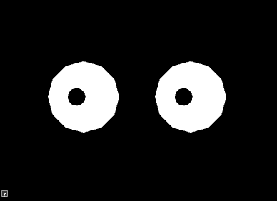
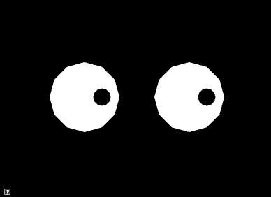
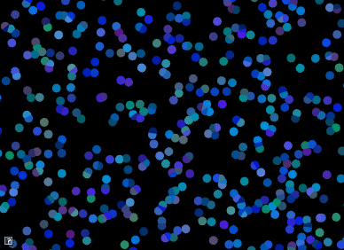
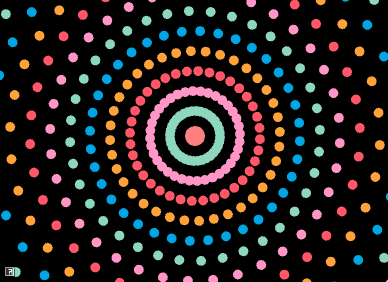
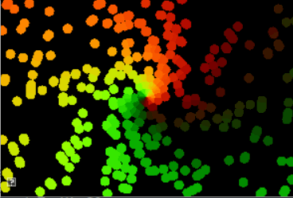
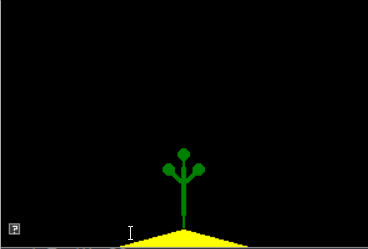
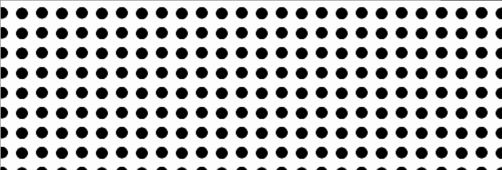

Assignment 1: Hello Animation!
In which, we make procedural 2D animations with spheres
Due Friday, September 17th, before midnight
In this assignment, you will work with particles that move in straight lines, circles, oscillations, or the direction of a target.
The goals of this lab are to work with
-
points, velocity, and time
-
sine, cosine, and tangent
1. Get the source
On Github, do a Fetch Upstream to synchronize your forked repository with the class repository.
Then update the source on your local machine and rebuild.
> git pull
> cd build
> cmake ..; make2. Question 1: Eyes!
An easy way to create smooth motion is to use sine() or cosine() to change an object’s properties. For this question, modify the code in assignments/a1-hello/eyes.cpp to draw a pair of eyes. Then use sine() or cosine() to animate the two eyes.
To run your program from the /build directory, type
build (mac/unix)> ../bin/a1-eyes
build (windows)> ../bin/Debug/a1-eyes| sin() will smoothly vary between 1 and -1 given smoothly increasing values. Use elapsedTime() as the input to sin(). |

3. Question 2: Look!
In class, we talked about how atan2 (tangent) can be used to compute an angle given a point. For this question, you will animate the eyes from Question 1 to follow a target. Your solution should use tangent to compute the position of the pupils.
The target is indicated with a red dot. To move it, click and hold down the left mouse button to drag it to a new location.
Implement your solution in assignments/a1-hello/look.cpp. To run your program from the build directory, type
build (mac/unix)> ../bin/a1-look
build (windows)> ../bin/Debug/a1-look
4. Question 3: Many particles!
In class, we talked about how to animate a particle to move in a straight line. In this assignment, we will extend this program to animate lots of particles moving in a straight line.
Implement your program in assignments/a1-hello/particles.cpp To run your program from the build directory, type
build (mac/unix)> ../bin/a1-particles
build (windows)> ../bin/Debug/a1-particles
This program should support the following features
-
Create 100+ particles, randomly distributed across the screen
-
Particles should all move in the same direction, but at different speeds
-
Particles should wrap when they move off the screen. For example, if a particle’s X position is greater than the window width, it should be reset to 0.
-
Particle colors should also be randomized<
It is up to you how to implement your program. However, some recommendations
-
Implement moving particles first
-
Implement random colors afterwards
-
Define a struct or class to hold the state for each particle. The state would include the particle’s position, color, and velocity.
-
Store your particles in a vector or array. Initialize them in setup(). Update and draw them in scene().
| Color Jitter The easiest way to generate a random color is to sample a random value for each red, green, and blue component. However, in the example above, we used a different approach called color jitter. To jitter color, we start with a base color and then add random deviations from it. For example, if our base color were blue, (0.2,0.8,0.2), we can jitter its components by adding random values in the range [-0.2, 0.2]. This gives us colors that are close to the original but still has variety. |
5. Question 4: Hypnotic circles
In class, we talked about how to animate a particle to move in a circle. In this assignment, we will extend this program to animate particles moving in concentric circles.
Implement your solution in assignments/a1-hello/circles.cpp To run your program from the build directory, type
build (mac/unix)> ../bin/a1-circles
build (windows)> ../bin/Debug/a1-circles
This program should satisfy the following requirements
-
Create 36*N particles, where N is the number of concentric circles. Each circle should have 36 particles, spaced 10 degrees apart.
-
Alternating circles should rotate in opposite directions.
-
Particles in the same circle should share the same color.
| Color Palettes A color palette is a simple method for generating harmonious colors. In this approach, we define a list of colors to use in our application. When we need a color, we choose it from this list. Above, we used the following palette. |
//https://www.color-hex.com/color-palette/82379
std::vector<vec3> pallet =
{
vec3(0,165,227)/255.0f,
vec3(141,215,191)/255.0f,
vec3(255,150,197)/255.0f,
vec3(255,87,104)/255.0f,
vec3(255,162,58)/255.0f
};6. Question 5: Make your own animation
Use different shapes, colors, curves, scale, etc. to make your own demo
  
Implement your unique animation in the file assignments/a1-hello/unique.cpp
Some ideas
-
Animate color and size
-
Change the color based on the current position
-
Create an interesting scene
-
Use more interesting velocities and curves for the particles, for example
-
Try to create falling snow or rising bubbles
-
Create a spiral animation
-
Try rose curves
-
Try Spirograph
-
7. Hand-in your work
7.1. What to hand-in
-
Your code
-
Images, movies, gifs, as appropriate
-
Your readme
7.2. How to hand-in
Check-in your code, images, and writeup and push the changes to Github. If everything is uploaded correctly, you will see your work on Github.
> cd animation-toolkit
> git add <files>
> git commit -m "helpful message"
> git pushBest practice is to always commit changes as you work, rather than waiting until the end to commit changes. You can always revert to an old version if you need to!
Your code should download and compile without modifications. Test your assignment on a lab machine (Park 230) to ensure that it works.
7.3. Generating images, movies and gifs
Screenshots
On Ubuntu, you can take a screenshot by
-
Prt Scrn to take a screenshot of the desktop.
-
Alt + Prt Scrn to take a screenshot of a window.
Gifs
On Ubuntu, you can use Peek to create gifs.
Movies
On Ubuntu, you can use recordmydesktop to record movies in .ogv format.
By default, the whole desktop is recorded unless you give it a window id.
To get the window id, call xwininfo and click on the window. Then pass the
id to recordmydesktop.
> recordmydesktop --windowid <WindowId> --no-sound --v_quality 30 -o <name>.ogvTo check the video, open it in firefox.
> firefox <name>.ogv| Files larger than 100 MB cannot be checked into git. In general, videos should be less than 5 MB. |
7.4. Update your Readme.md
Update assignments/a1-hello/Readme.md to document the features in your assignment. Your readme should contain your images, gifs, and movies.
On github, you can drag and drop movies into your readme files. Images and gifs can also be added that way, or by including text such as the following
This Guide can help you with writing markdown.